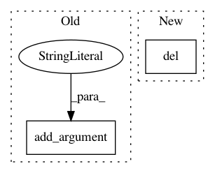

9418883d418ecccd7fe5da4dddffdc01064efb23,ilastik/workflows/carving/splitBodyCarvingWorkflow.py,SplitBodyCarvingWorkflow,__init__,#SplitBodyCarvingWorkflow#Any#Any#Any#Any#Any#,74
Before Change
self._split_tool_params = None
if workflow_cmdline_args:
arg_parser = argparse.ArgumentParser(description="Specify parameters for the split-body carving workflow")
arg_parser.add_argument("--split_tool_param_file", required=False)
parsed_args, unused_args = arg_parser.parse_known_args(workflow_cmdline_args)
if unused_args:
logger.warn("Unused command-line args: {}".format( unused_args ))
After Change
"_schema_version" : 0.1,
// Input data
"raw_data_info" : JsonConfigParser( DatasetInfo.DatasetInfoSchema ),
"pixel_probabilities_info" : JsonConfigParser( DatasetInfo.DatasetInfoSchema ),
"raveler_labels_info" : JsonConfigParser( DatasetInfo.DatasetInfoSchema ),
In pattern: SUPERPATTERN
Frequency: 3
Non-data size: 2
Instances
Project Name: ilastik/ilastik
Commit Name: 9418883d418ecccd7fe5da4dddffdc01064efb23
Time: 2014-03-26
Author: bergs@janelia.hhmi.org
File Name: ilastik/workflows/carving/splitBodyCarvingWorkflow.py
Class Name: SplitBodyCarvingWorkflow
Method Name: __init__
Project Name: asyml/texar
Commit Name: da9d81ea78164ca729875d7c8438667cb371d3cd
Time: 2018-08-21
Author: shore@pku.edu.cn
File Name: examples/transformer/hyperparams.py
Class Name:
Method Name: load_hyperparams
Project Name: GoogleCloudPlatform/cloudml-samples
Commit Name: d9651881be87a8442e7c2763731bcd2a60dcdb64
Time: 2017-06-22
Author: elibixby@google.com
File Name: census/tensorflowcore/trainer/task.py
Class Name:
Method Name: